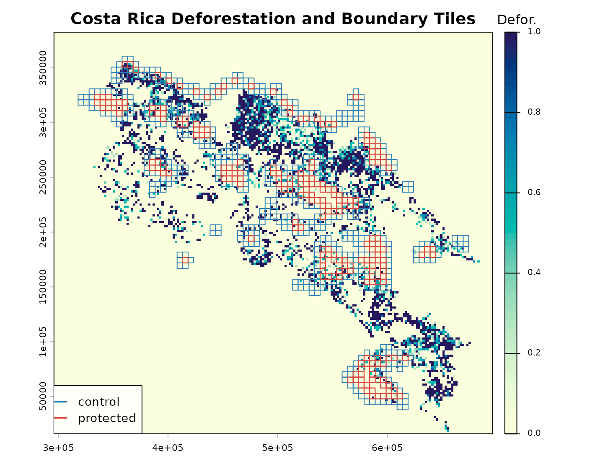
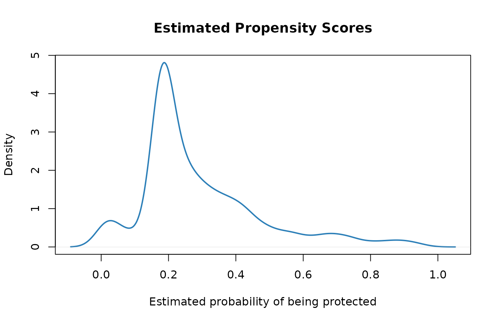
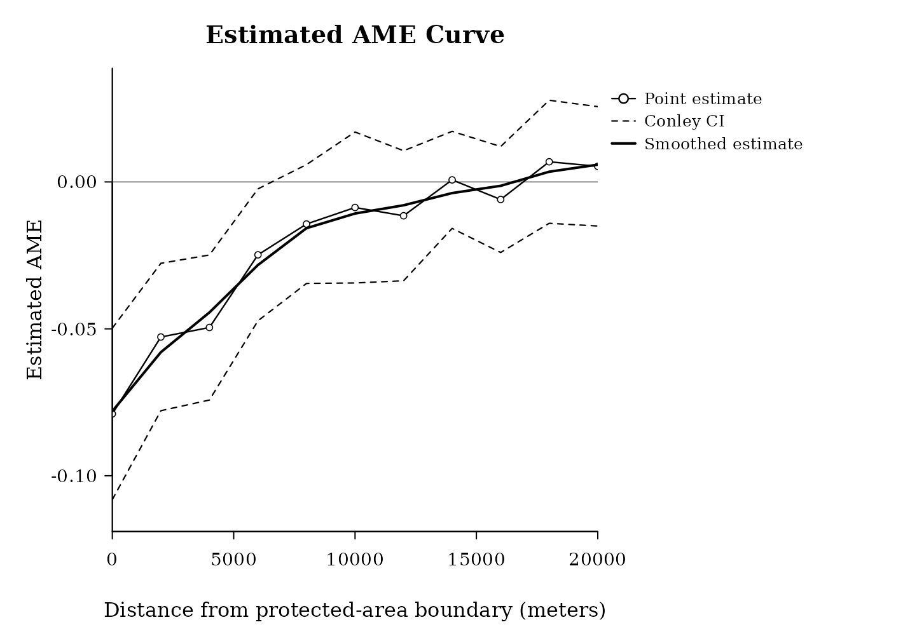

Ferraro et al. (2015)
ferraro-etal-2015.Rmd1. Background
This example follows Ferraro et al. (2015), an observational study of protected areas and forest outcomes in Costa Rica. Protected areas are not randomly placed: they may differ from nearby unprotected land in soil, road access, city access, and other conditions. We use SpatialEffect2 to estimate how deforestation differs near protected-area boundaries after a simple propensity-score adjustment.
2. Load Data
library(SpatialEffect2)
library(terra)
library(sf)
ferraro_bundle <- locate_bundle("ferraro_etal_2015_sf_bundle.zip")
stopifnot(!is.na(ferraro_bundle))
td <- tempfile("ferraro2015_")
dir.create(td)
unzip(ferraro_bundle, exdir = td)
base_dir <- file.path(td, "ferraro_etal_2015_sf")
pa_path <- file.path(base_dir, "data", "Costa Rica", "PAs_Reproj", "PAs_before80_1.shp")
forest_path <- file.path(
base_dir,
"data", "Costa Rica", "Deforestation and Carbon", "Spatial",
"final_pixels_w_covs.shp"
)
protected_areas <- st_read(pa_path, quiet = TRUE)
forest <- st_read(forest_path, quiet = TRUE)
forest <- st_transform(forest, st_crs(protected_areas))
protected_areas <- st_make_valid(protected_areas)3. Prepare the Analysis Objects
# The helper prepares three objects used by SpatialEffect():
# ras: outcome raster; ras_Z_sf: intervention tiles; Zdata: treatment data.
prepared <- prepare_ferraro_inputs(protected_areas, forest)
ras <- prepared$ras
ras_Z_sf <- prepared$ras_Z_sf
Zdata <- prepared$Zdata
c(
n_protected_areas = nrow(protected_areas),
n_outcome_parcels = nrow(forest),
n_nodes = nrow(Zdata),
n_treated = sum(Zdata$treatment == 1),
n_control = sum(Zdata$treatment == 0)
)
#> n_protected_areas n_outcome_parcels n_nodes n_treated
#> 39 13100 770 225
#> n_control
#> 545
prepared$boundary_counts
#>
#> 0 1 <NA>
#> 545 225 3845The full bundle contains the longer data-preparation script. The website keeps only the main steps visible so the empirical workflow is easier to follow.
4. Visualize the Data
op <- par(mar = c(3.3, 3.3, 3.2, 5.2))
plot(
ras,
main = "Costa Rica Deforestation and Boundary Tiles",
col = hcl.colors(60, "YlGnBu", rev = TRUE),
plg = list(title = "Defor.", cex = 0.8)
)
plot(vect(ras_Z_sf[Zdata$treatment == 0, ]), add = TRUE, border = "#2C7FB8", lwd = 1.0)
plot(vect(ras_Z_sf[Zdata$treatment == 1, ]), add = TRUE, border = "#D94841", lwd = 1.2)
legend(
"bottomleft",
legend = c("control", "protected"),
col = c("#2C7FB8", "#D94841"),
lwd = 2,
bg = grDevices::adjustcolor("white", alpha.f = 0.85),
cex = 0.9
)
par(op)5. Propensity Scores and Estimand
# Protected-area placement is observational, so we estimate a simple propensity
# score from node-level land and access covariates.
pscore_fit <- glm(
treatment ~ luc_high + dist_road + dist_city,
data = Zdata,
family = binomial()
)
Zdata$prob_treatment <- pmin(pmax(predict(pscore_fit, type = "response"), 0.01), 0.99)
summary(Zdata$prob_treatment)
#> Min. 1st Qu. Median Mean 3rd Qu. Max.
#> 0.0100 0.1801 0.2314 0.2923 0.3685 0.9512
plot(
density(Zdata$prob_treatment),
main = "Estimated Propensity Scores",
xlab = "Estimated probability of being protected",
lwd = 2,
col = "#2C7FB8"
)
We target the Average Marginalized Effect (AME) at
distance d: the average change in deforestation at distance
d when a boundary tile is protected rather than
unprotected, averaging over the rest of the spatial layout. A negative
AME means less deforestation near protected-area tiles than near
comparable control tiles.
6. Estimate with SpatialEffect2
dVec_km <- seq(0, 20, by = 2)
dVec_m <- dVec_km * 1000
result <- SpatialEffect(
ras = ras,
ras_Z = ras_Z_sf,
Zdata = Zdata,
treatment = "treatment",
prob_treatment = "prob_treatment",
dVec = dVec_m,
cType = "donut",
dist.metric = "Euclidean",
numpts = 600,
smooth = 1,
bw = 5000,
bw_debias = 5000,
smooth.conley.se = 0,
per.se = 0,
conley.se = 1,
cutoff = 15000,
kernel = "tri",
nPerms = 100,
n_threads = 1L,
perm_engine = "shuffle"
)
head(result$AME_est, 6)
#> d taud_est
#> 1 0 -0.078938070
#> 2 2000 -0.052779183
#> 3 4000 -0.049546420
#> 4 6000 -0.024814725
#> 5 8000 -0.014326154
#> 6 10000 -0.0087011947. Look at the Estimated Results
The returned object has class "SpatialEffect", so
graphics::plot(result, ...) uses SpatialEffect2’s S3
method, plot.SpatialEffect(). Because
conley.se = 1, the plot includes Conley confidence
intervals.
graphics::plot(
result,
smooth = TRUE,
ci.type = "conley",
style = "lines",
xlab = "Distance from protected-area boundary (meters)",
ylab = "Estimated AME",
main = "Estimated AME Curve"
)
summary(result, dVec.range = c(0, 6000))
#> Call: SpatialEffect
#>
#> dVec AME_est Conley.CI.l Conley.CI.u AME_smoothed
#> [1,] 0 -0.079 -0.108 -0.050 -0.078
#> [2,] 2000 -0.053 -0.078 -0.028 -0.058
#> [3,] 4000 -0.050 -0.074 -0.025 -0.044
#> [4,] 6000 -0.025 -0.047 -0.002 -0.028
ame <- result$AME_est
ame$km <- ame$d / 1000
subset(ame, km %in% c(0, 2, 4, 6, 10, 20))
#> d taud_est km
#> 1 0 -0.078938070 0
#> 2 2000 -0.052779183 2
#> 3 4000 -0.049546420 4
#> 4 6000 -0.024814725 6
#> 6 10000 -0.008701194 10
#> 11 20000 0.005307511 208. Test a Policy-Relevant Distance Range
test <- SpatialEffectTest(
result.list = result,
test.range = c(0, 5000),
smooth = 0,
alpha = 0.05
)
test
#> $test.stat
#> [1] -0.1812637
#>
#> $test.CI
#> 2.5% 97.5%
#> -0.06285219 0.05071508
test$test.stat < test$test.CI[1] || test$test.stat > test$test.CI[2]
#> [1] TRUETRUE means the observed range-level effect lies outside
the permutation null interval at level alpha.
9. Interpretation
In this lightweight run, the estimated AME is negative near protected-area boundaries and moves toward zero as distance increases. Substantively, this suggests that the strongest association between protected areas and lower deforestation is local, with weaker differences farther from the boundary.
For a full analysis, use a finer raster, more distance points, and
more permutations. Set per.se = 1 if you also want
permutation intervals at each distance.
10. Reference
Ferraro, P. J., M. M. Hanauer, D. A. Miteva, J. L. Nelson, S. K. Pattanayak, C. Nolte, and K. R. E. Sims (2015). “Estimating the impacts of conservation on ecosystem services and poverty by integrating modeling and evaluation.” Proceedings of the National Academy of Sciences of the United States of America 112(24): 7420-7425.